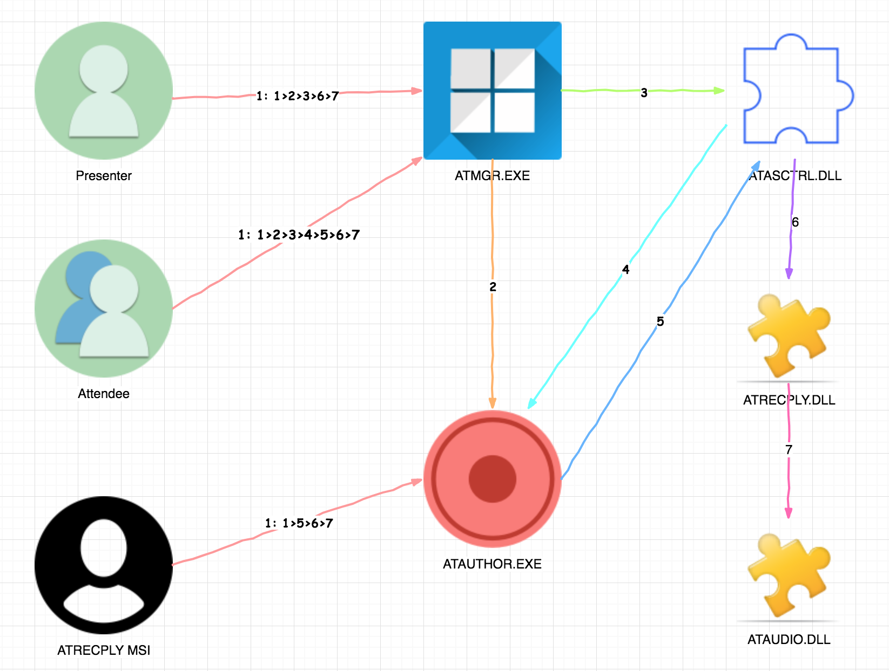
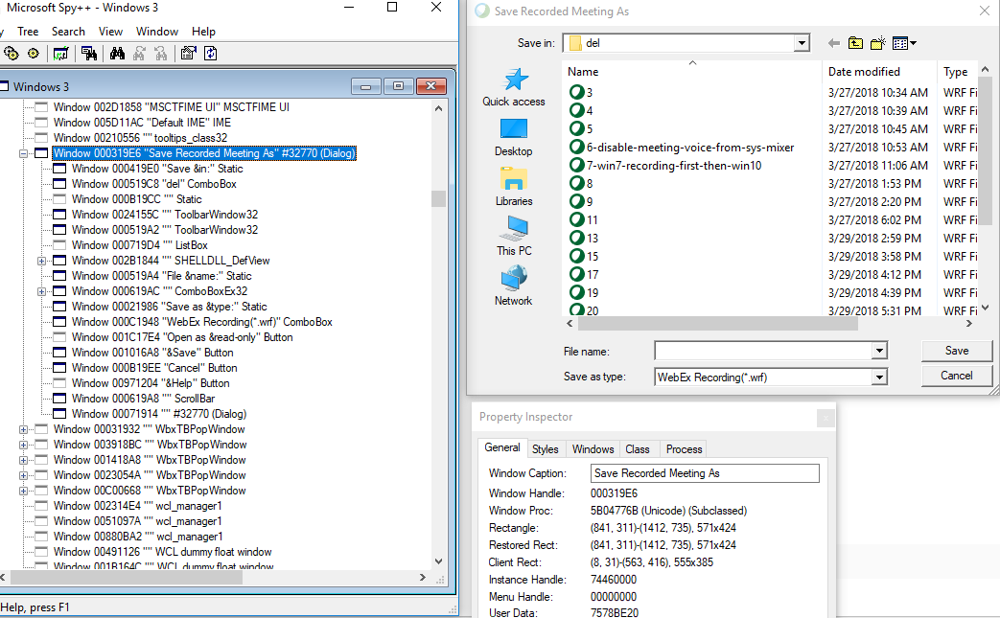
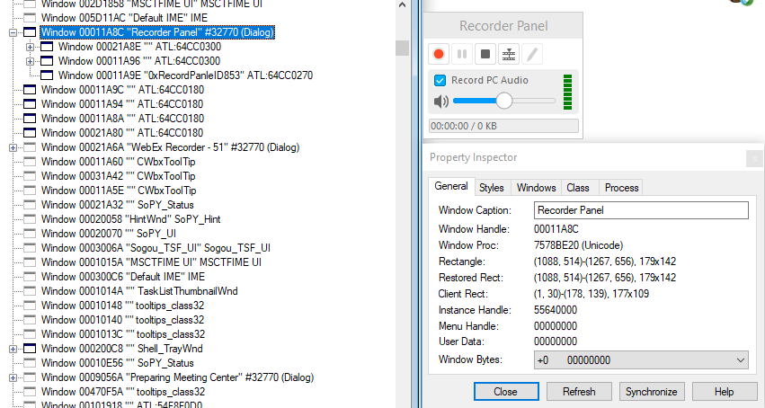
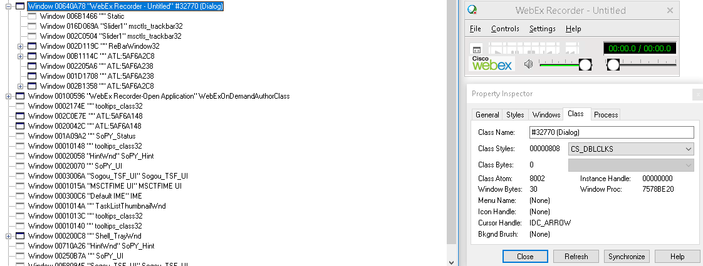
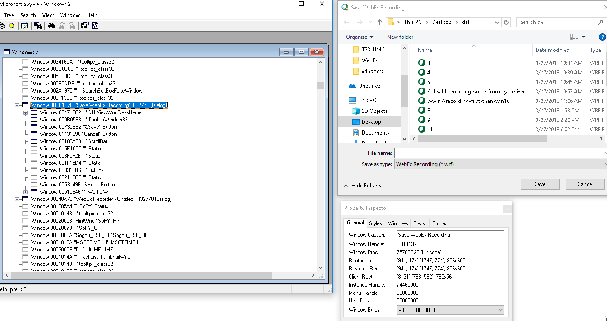
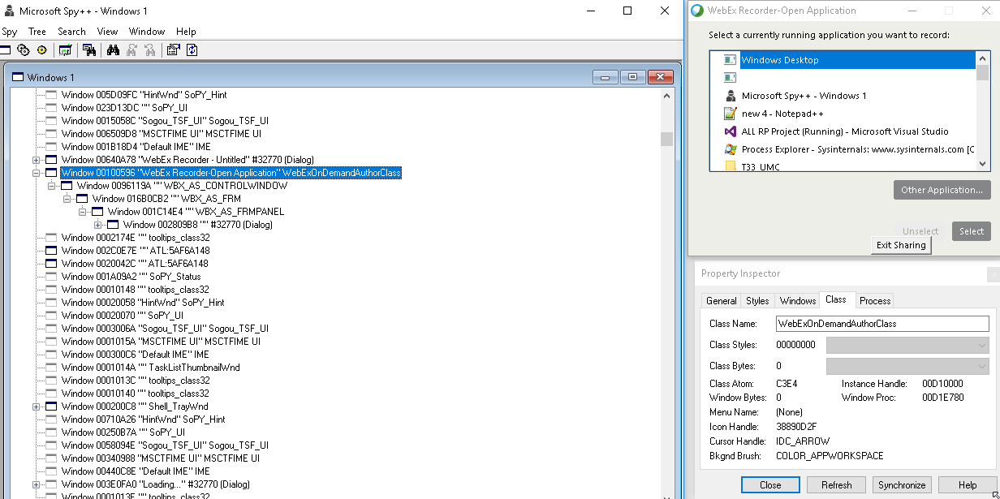

Local Recording Introduce I¶
Overview¶

Core Component¶

Codec¶
AS Codec Type¶
AS_CODEC_TSHARE
AS_CODEC_H264
- CSmRecordSessionMgr::SetRecordCodec
- AS CODEC H264 1
- IsTandbergMeeting : SiteConfigExt & SITE_CONFIGEXT_SUPPORT_TP_PLUS(0x1000000)
- IsEnableMp4PlaybackInNonCMR : EnableMP4ForNonCMR
- GetHostCETFlag : HostCETFlag
- GetCETMeetingFlag : CETMeetingFlag
- GetSupportTPFlag : SiteConfigExt & SITE_CONFIGEXT_SUPPORT_TP (0x800)
AS CODEC TSHARE 0
Audio Codec Type¶
- AUDIOCODEC_GSM610 0
- AUDIOCODEC_G7231_63 1
- AUDIOCODEC_G7231_53 2
- AUDIOCODEC_PCM1 3
- AUDIOCODEC_PCM2 4
- AUDIOCODEC_PCM3 5
- AUDIOCODEC_FLAC 6
- AUDIOCODEC_G711 7
- AUDIOCODEC_LAME 8
- AUDIOCODEC_RSV2 9
- AUDIOCODEC_ISAC 10/added aaron for iSAC/
- AUDIOCODEC_ILBC 11//by smithg for adding iLBC codec type
iLBC¶
iLBC is a VOIP codec originally created by Global IP Sound but made available (including its source code) under a restricted but free and fairly liberal license, including permission to modify.
What is iLBC?
iLBC (internet Low Bitrate Codec) is a FREE speech codec suitable for robust voice communication over IP. The codec is designed for narrow band speech and results in a payload bit rate of 13.33 kbit/s with an encoding frame length of 30 ms and 15.20 kbps with an encoding length of 20 ms. The iLBC codec enables graceful speech quality degradation in the case of lost frames, which occurs in connection with lost or delayed IP packets.
Features
Bitrate 13.33 kbps (399 bits, packetized in 50 bytes) for the frame size of 30 ms and 15.2 kbps (303 bits, packetized in 38 bytes) for the frame size of 20 ms
Basic quality higher than G.729A, high robustness to packet loss
Computational complexity in a range of G.729A
Royalty-free Codec
Local Record Relevant UI¶
Save Recorded Meeting As
Meeting Title Recording
Meeting Status Recording
Meeting Status Meeting recording is paused
Recorder Panel
WebEx Recorder - Untitled
Save WebEx Recording
WebEx Recorder-Open Application

Others¶
Item1, pfwres.dll
Item5, atrpui.dll
- Next Sprint:
- US30394
- Research how to generate mp4 file